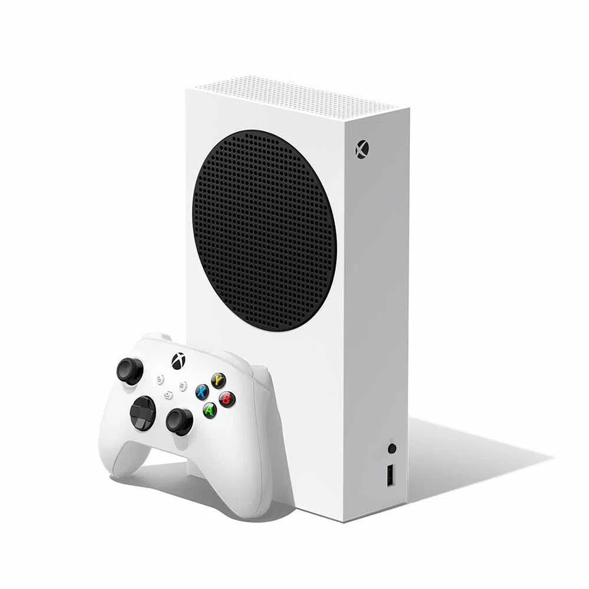
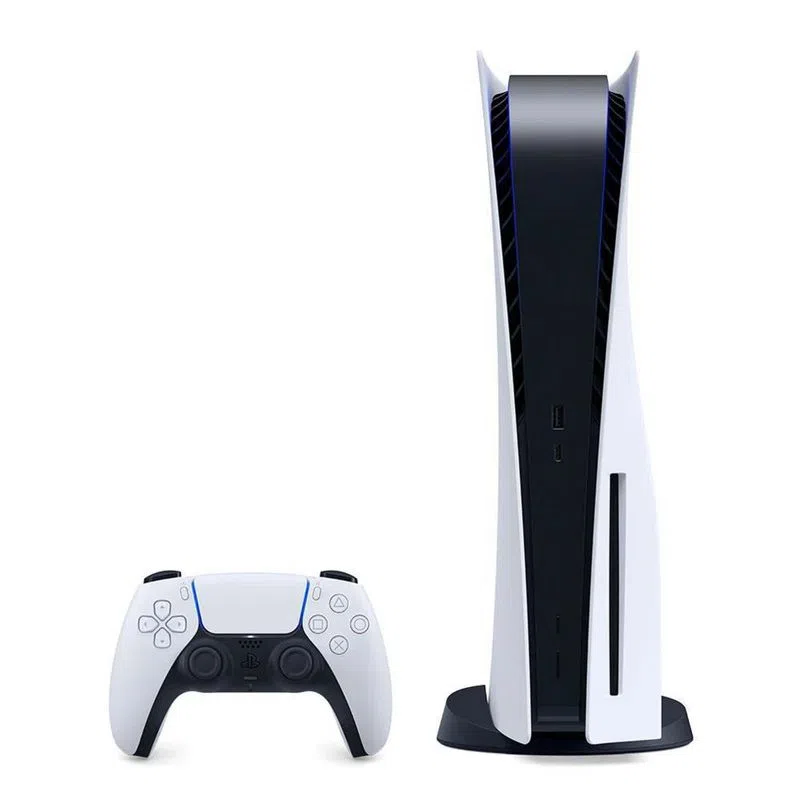

NINTENDO SWITCH
Juega en casa en tu televisor o en el camino con una vibrante pantalla OLED de 7 pulgadas (17.78 cm) con la consola Nintendo Switch – Modelo OLED. Además de la pantalla, que ofrece colores brillantes y contrastes definidos, la consola Nintendo Switch – Modelo OLED incluye 64 GB de almacenamiento interno, una base con un puerto LAN para conexión por cable para jugar en el televisor.
$1.449.900

XBOX SERIE S
La Xbox Series S es una consola de videojuegos de próxima generación desarrollada por Microsoft. Fue lanzada en noviembre de 2020 como parte de la serie Xbox Series X|S. A continuación, te proporciono una breve descripción de sus características principales.
$1.649.000

PLAYSTATION 5
Sin duda, una de las cosas más positivas de PS5 son sus nuevas funciones respecto a PS4. La nueva consola de Sony cuenta con grandes sorpresas, como la nueva app de Twitch, la posibilidad de grabar y compartir clips de vídeo o capturas, ver vídeos mientras jugamos o el interesante Juego Remoto de PS5.
$2.279.886